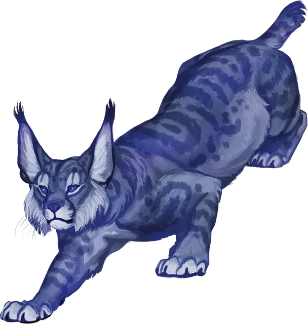

Гигантская рысь
Giant Lynx
Средняя Фея, обычно нейтральная

Класс Доспеха 14
Хиты 22 (4к8 + 4)
Скорость 30 футов, лазая 30 футов
| мод | спас | ||
|---|---|---|---|
| СИЛ | 14 | +2 | +2 |
| ЛОВ | 18 | +4 | +4 |
| ТЕЛ | 13 | +1 | +1 |
| мод | спас | ||
|---|---|---|---|
| ИНТ | 12 | +1 | +1 |
| МДР | 14 | +2 | +2 |
| ХАР | 10 | +0 | +0 |
Навыки Восприятие +6, Скрытность +6
Сопротивление урону холод
Чувства истинное зрение 60 футов, пассивное Восприятие 16
Языки Великаний, Сильван
Опасность 1/2 (100 опыта)
Бонус мастерства +2
Особенности
Рысий взгляд (1/день). Рысь может наложить заклинание подсматривание [clairvoyance], без использования материальных компонентов и используя Мудрость в качестве базовой характеристики.
Лесной камуфляж. Рысь с преимуществом совершает проверку Ловкости (Скрытность), совершаемую для того, чтобы спрятаться в подлеске или заснеженной местности.
Действия
Когти. . Рукопашная атака оружием: +6 к попаданию, досягаемость 5 футов, одна цель. Попадание: 8 (1к8 + 4) рубящего урона. Если рысь переместится как минимум на 20 футов по прямой к цели, а затем в том же ходу попадёт по ней атакой, цель должна совершить спасбросок Силы Сл 12, иначе цель падает ничком. Если цель сбита с ног, то рысь может совершить по ней еще одну атаку Когтями бонусным действием.
Описание
Незадолго до встречи с ледяным великаном, чей удачно расположенный валун положил конец моему человеческому существованию, мы с Морденкайненом увидели гигантскую рысь. Она просто смотрела в пустоту, таким вот кошачьим взглядом. Морденкайнен хотел поговорить с ней, выяснить, на что она смотрит, но я смог отговорить его.
- Бигби
Когда вы видите гигантскую рысь, уставившуюся в пустоту, вы можете быть совершенно уверены, что она смотрит на что-то, чего там ещё нет. Или на призрака.
- Дианкастра
Хотя их часто принимают за обычных кошек, гигантские рыси - волшебные существа, родом из заснеженных лесов Царства Фей. Зимой их шерсть становится светлее, что помогает им маскироваться в их излюбленных местах обитания, даже когда местность покрыта снегом.
Гигантские рыси - искусные охотники, объединяющиеся в небольшие группы, чтобы заманить добычу в ловушку, и иногда использующие магический дар для разведки вероятных мест охоты. Они также достаточно умны, чтобы перехитрить многих охотников, пытающихся заманить их собственные ловушки ради меха, и им нравится ломать любые ловушки звероловов, которые они находят на своих территориях.
Ледяные и облачные великаны иногда дружат с гигантскими рысями и относятся к ним как к любимым домашним животным. До тех пор, пока уважаются интеллект и независимость рысей, эти существа с радостью делятся своей магией предсказания со своими великаньими товарищами.